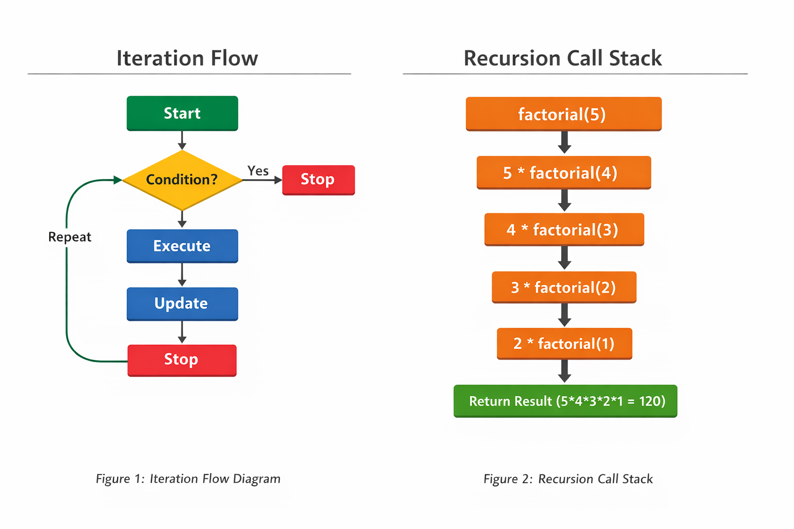
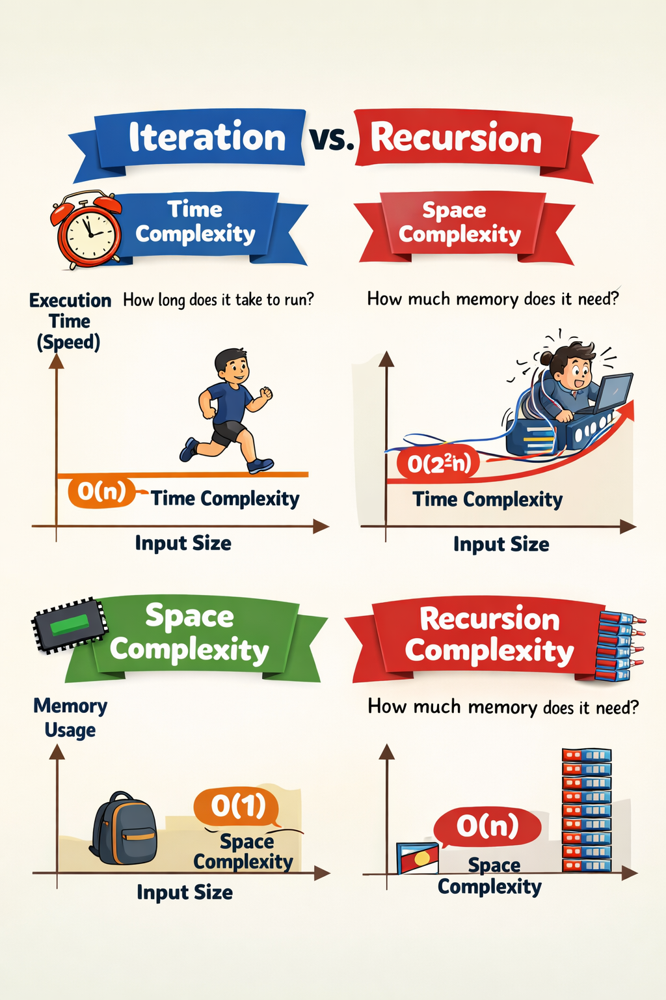

Author: Sastha Jeyasri A
Register Number: 24BAD106
Course: Design and Analysis of Algorithms
Department: Artificial Intelligence and Data Science
Topic: Recursion vs Iteration
Date: March 2026
Introduction
Recursion and iteration are two important techniques used in algorithm design to solve repetitive problems. Iteration uses looping statements such as for and while loops, whereas recursion uses functions that call themselves until a stopping condition is reached.
Understanding these techniques is important in Design and Analysis of Algorithms because it helps programmers choose efficient solutions based on time complexity and space complexity.
Diagram Explanation

Figure 1: Iteration and Recursion (Educational illustration generated with AI assistance for learning purposes).
Concept of Iteration
Iteration is a process of repeating a set of instructions using loops until a condition becomes false. It is generally preferred when memory efficiency and execution speed are important.
Characteristics of Iteration
- Uses loop structures
- Memory efficient
- Faster execution
- No function call overhead
- Easy to understand
Iteration Algorithm Example (Factorial)
Algorithm:
1. Start
2. Read number n
3. Initialize fact = 1
4. Repeat from i = 1 to n
5. fact = fact × i
6. Display fact
7. Stop
Python Example (Iteration)
def factorial_iteration(n):
fact = 1
for i in range(1,n+1):
fact = fact*i
return fact
print(factorial_iteration(5))
Concept of Recursion
Recursion is a technique where a function calls itself to solve smaller instances of the same problem. Every recursive function must have a base condition to stop the execution.
Recursion is widely used in divide-and-conquer algorithms and tree-based problems.
Characteristics of Recursion
- Function calls itself
- Needs base condition
- Uses stack memory
- Good for complex problems
- Code looks clean and structured
Recursion Algorithm Example (Factorial)
Algorithm:
1. Start
2. Define factorial(n)
3. If n = 1 return 1
4. Else return n × factorial(n-1)
5. Stop
Python Example (Recursion)
def factorial_recursion(n):
if n == 1:
return 1
return n * factorial_recursion(n-1)
print(factorial_recursion(5))

Figure 2: Workflow diagram illustrating the iteration and recursion process (Educational illustration generated with AI assistance for learning purposes).
Time and Space Complexity Comparison
| Method | Time Complexity | Space Complexity |
|---|---|---|
| Iteration | O(n) | O(1) |
| Recursion | O(n) | O(n) |
Both approaches take similar time for factorial calculation, but recursion uses additional memory because of function call stack.
Diagram Explanation

Figure 3: Time and Space Complexity comparison of Iteration and Recursion (Educational illustration generated with AI assistance for learning purposes).
Analysis of Complexity Diagram
As shown in Figure 3, iteration and recursion may have similar time complexity depending on the problem. For example, factorial using both methods has O(n) time complexity.
However, space complexity differs. Iteration typically uses constant memory O(1) because it only uses variables. Recursion usually requires O(n) memory because each function call is stored in the call stack.
It is also important to understand that recursion does not always mean exponential time complexity. Only certain problems like naive Fibonacci recursion have O(2ⁿ) time complexity. Many recursive algorithms such as factorial and binary search have efficient time complexity like O(n) and O(log n).
Difference Between Recursion and Iteration
The following table summarizes the major differences between iteration and recursion based on structure, performance, and memory usage.
| Iteration | Recursion |
|---|---|
| Uses loops | Uses function calls |
| Faster execution | Slightly slower |
| Uses less memory | Uses more memory |
| Simple structure | Elegant structure |
| No stack usage | Uses call stack |
Advantages of Iteration
- Faster performance
- Less memory usage
- Simple implementation
- No stack overflow risk
Advantages of Recursion
- Cleaner code
- Natural solution for some problems
- Useful in divide and conquer
- Reduces code length
When to Use Recursion vs Iteration
Iteration should be used when performance and memory efficiency are important.
Recursion should be used when problems can be divided into smaller similar subproblems.
In practice, iteration is often preferred when memory is limited, while recursion is preferred when the problem naturally follows a recursive structure such as tree traversal or divide-and-conquer algorithms.
Examples where recursion is useful:
- Binary Search
- Merge Sort
- Tree Traversal
Examples where iteration is useful:
- Array traversal
- Counting problems
- Mathematical calculations
Conclusion
Recursion and iteration are essential concepts in algorithm design. Iteration provides better performance and memory efficiency, while recursion provides elegant and structured solutions for complex problems. Understanding both approaches helps in selecting the best technique depending on the problem requirements.
Key Takeaways
Iteration uses loops and constant memory, while recursion uses function calls and additional stack memory. Both can solve similar problems but differ in implementation and memory usage. Proper understanding helps in writing efficient algorithms.
References
- Python Documentation – https://docs.python.org/3/
- Anany Levitin,Introduction to the Design and Analysis of Algorithms,Addison-Wesley, 3rd Edition, 2011.
- Michael T. Goodrich, Data Structures and Algorithms in Python
- GeeksforGeeks – https://www.geeksforgeeks.org/recursion/
AI Usage Declaration
This blog content was prepared for academic learning purposes based on standard Design and Analysis of Algorithms concepts. Some explanations and diagrams were created with the assistance of AI tools (ChatGPT) to improve clarity and visualization. All concepts were reviewed and organized by the author for educational submission.
Academic Integrity Statement
I confirm that this submission is prepared for educational purposes and the concepts presented are based on standard algorithm theory. Any external references used are properly acknowledged.